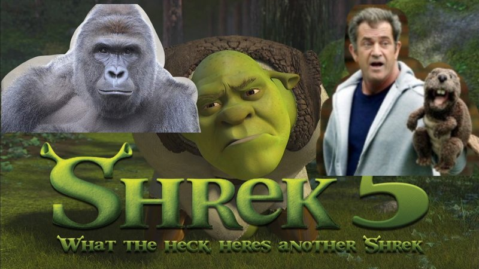

Barnhouse Studios is a film production studios created in 2015. It is run by Jason Cramer, Max Holsbeke, and Jack Wisialowski. We make movies, tv shows, videos, and everything related. If you would like to further develop one of our previous works, or if you have an idea you would like us to produce, you can contact us at barnhousestudiosofficial@gmail.com or use the contact page on this site.
